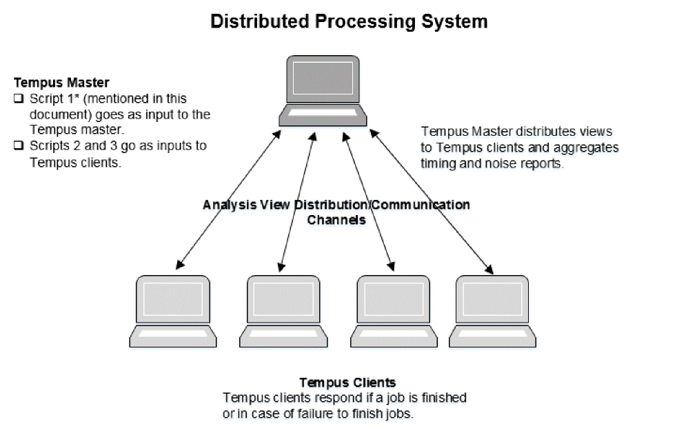

DMMMC Overview
The multi-mode multi-corner (MMMC) timing analysis can be run in distributed mode also. Distributed multi-mode multi-corner (DMMMC) enables controlled distribution of various analysis views to a selected or shared group of machines, and then merges the reports generated for timing and signal integrity across the views.
This chapter describes how an existing MMMC setup can be transitioned to distributed MMMC (that is, to multiple machines/CPUs). These multiple machines/CPUs will be referred as Tempus clients in this chapter.
Distributed MMMC is a method of processing timing analysis views where the runs are distributed on several Tempus clients. This allows you to run Timing/SI analysis for different analysis views on multiple Tempus clients and then merge/aggregate the generated reports from various views into a single report. The flow is shown in the figure below.

The Tempus master invokes a set of Tempus clients on the specified machines/CPUs, using the set_distribute_host command. Besides tracking the activity on Tempus clients, the Tempus master also governs the responsibility of adjusting queued analysis jobs to active Tempus clients, in case some Tempus clients fail due to an unexpected event.
Distributed MMMC in Tempus enables:
- Parallel analysis of multiple MMMC views running simultaneously on multiple Tempus clients controlled via a Tempus Master session.
- Merging of timing reports.
- Saving a significant amount of real time as compared to sequential runs when there are a large number of views to analyze.
- Accelerated utilization of available computing power (multiple CPU cores) on local or remote machines/hardware via super threading.
Licensing Requirements
Refer to “Tempus License Options for Distributed MMMC (DMMMC)” in the “Product and Licensing Information” chapter.
Restrictions
The following restriction applies to distributed MMMC analysis:
- Distributed MMMC analysis is supported in GUI mode. However, the GUI menu and forms are not available for DMMMC commands.
Return to top